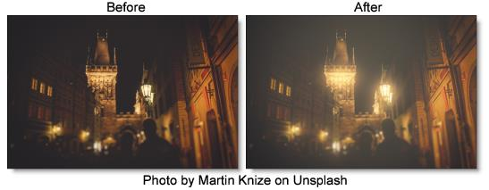

Double Fog
Description
The Double Fog filter creates a soft, misty atmosphere over the image by first applying fog using a vanishing point along the direction of increasing distance in the image. Then, a second pass blooms image highlights.
Category
Diffusion/Blurs.
Controls
Presets
To select a preset, pick one from the Presets window.
Fog
Color
The Color parameter sets the color of the fog to be added through the use of a standard color picker. The default color is white.
Vanishing Point
A vanishing point along the direction of increasing distance in the image is used to add fog. By default, the vanishing point is set to the center of the screen. Essentially, the fog is added in a radial pattern emanating from the vanishing point. So at the default center position, fog is added in a circular pattern with a greater amount of fog being added in the center while falling off at the edges. For instance, if you would like your fog to move in the direction of top right to bottom left, set your vanishing point towards the top right corner and the fog will be more intense at the upper right and fall off at the bottom left. However, in most cases, the vanishing point can be left in the center of the screen and you will obtain acceptable results.
There is an on-screen control in the center of the image. By clicking and dragging the on-screen control or sliders, the position of the vanishing point can be adjusted.
Fog
Sets the amount of fog to be added to the scene.
Min Depth
Controls how much fog is added in the darker areas of the image.
Max Depth
Controls how much fog is added in the brighter areas of the image.
Glow
The Glow controls are used to add additional atmosphere and are useful in adding glow to highlights. By default, a wide matte of highlights are glowed in the image and blended with the Screen blend mode. This works well for adding additional fog. To add glow around highlights such as light sources, it is best to set the Blend mode to Add and lower the Matte > Range parameter to limit the areas of glow to only include the light sources.
Blend
Determines the blend mode to be used to create the glow effect.
Add
The glow is added to your image.
Screen
The glow is combined with the image using a Screen blend mode. This looks kind of like the Add blend mode, but highlights are retained.
Brightness
Sets the intensity of the glow.
Blur
Sets the softness of the glow.
Color
The Color parameter sets the color of the glow through the use of a standard color picker. The default color is white.
Matte
A matte is used to create the glow effect. Go to the
Matte section of Common Filter Controls to see how the Matte controls work.